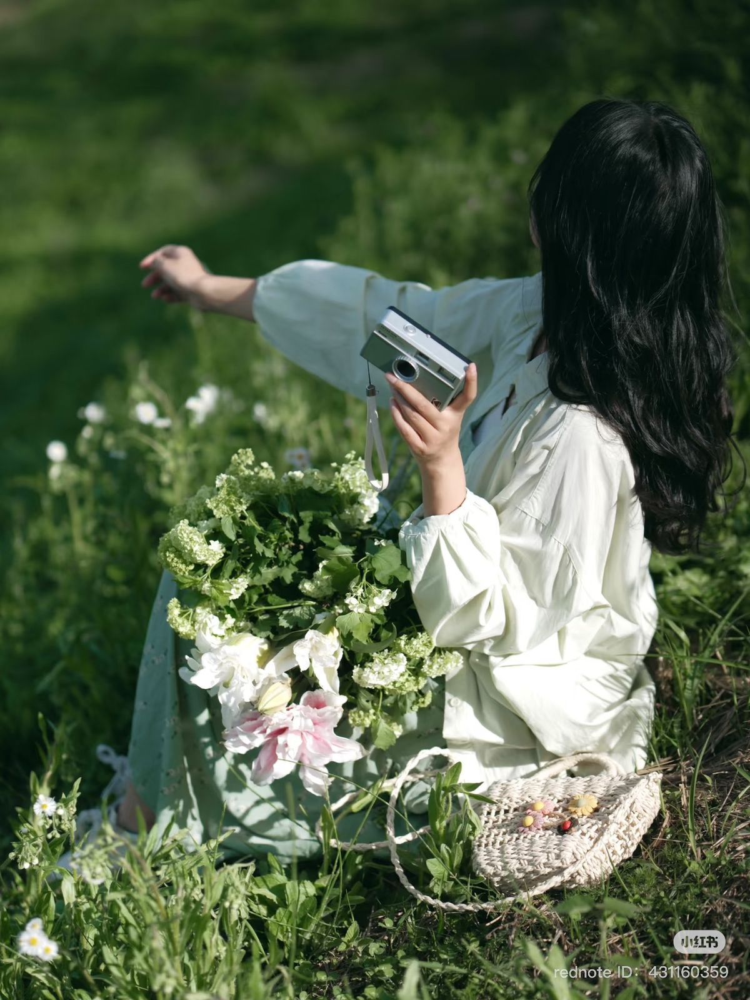

Sentiment


No 02
P-01
Senti carries more than scent sentiment.
The quiet emotions that stay with us,
returning softly through familiar air.
Not seen, but deeply felt.
P-02
01 - Emotion
02 - Memory
03 - Presence
A feeling often arrives quietly.
Not through words,
but through a moment
that stays unexpectedly.
Emotion settles into memory,
becoming something we return to
without knowing why.
A scent can carry warmth, longing,
comfort, or distance
turning feeling into presence.
Emotion
Lngers
Even
After
The moment fades.